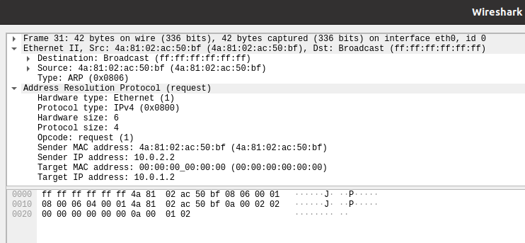
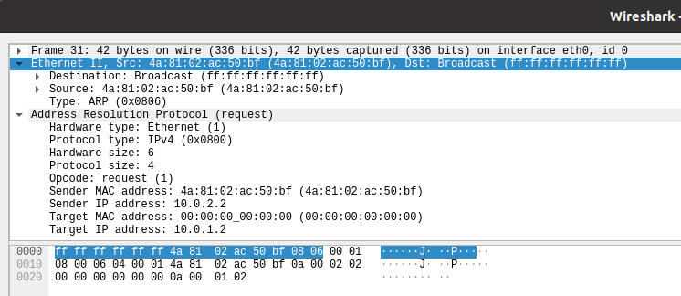

Thursday December 29, 2022.
Back To Articles
In the previous article we discussed ARP, the address resolution protocol, and how it is used to create mappings between ip addresses (used by the layer 3 Internet Protocol) and MAC addresses (used by layer 2 ethernet frames). Now we are going to walk through a mini-series on how to implement ARP ourselves, since there's no better way to learn how something works than to build it yourself.
Linux provides us with all sorts of different types of sockets for different uses. If we take a look at the manpage for the socket system call, man 2 socket, then we see that the first argument given to the socket function is the domain. As per the manpage: "The domain argument specifies a communication domain; this selects the protocol family which will be used for communication". The manpage then goes on to list all sorts of domains we can choose from. For example, there is the AF_INET domain, which is probably the most popular one and is used for creating a socket for using the Internet Protocol (IPv4). The INET part of the name is an abbreviation of internet. You'll also notice all of the domains begin with the prefix AF_. The AF stands for Address Family. For further information on the different address families or domains we can look at the manpage man 7 address_families.
To implement ARP we can't use the AF_INET domain, since ARP is a layer 2 protocol built directly off the ethernet frames and does not know anything about IP. Instead, the domain we're interested in is AF_PACKET, which we are told is a "Low-level packet interface". Like all the domains, we can check out the manpage for that domain in particular to get some more information about it. For AF_PACKET we can take a look at man 7 packet. The first sentence of the description tells us exactly what we want: "Packet sockets are used to receive or send raw packets at the device driver (OSI Layer 2) level". To implement ARP we need to implement at layer 2, so this is the domain we want to use.
Our eventual goal is to implement ARP, but there are two actors involved in an ARP exchange. There's a client, which sends out an ARP request, and there's a server, which receives ARP requests and sends an ARP reply back to the client. For completeness, we'll implement both sides, but we'll start with the client since the kernel already acts as an ARP server by default and so our client will be able to function correctly without our own server. Either way, since both the client and server need to listen for incoming ARP packets (the client listens for a reply and the server for a request), let's begin by building a simple server which listens for ARP packets of any type.
I'm going to write this code in C, but it can be written in any language which provides access to the appropriate system calls.
First, let's read through the manpage to get a bit of a better sense on how to implement our simple packet listener. The next argument to pass to the socket function is the socket type, which the manpages tell us can either be SOCK_RAW or SOCK_DGRAM. The primary difference between the two is that a raw socket requires the user to construct the link-level header (that is, the ethernet frame) and you receive packets with the ethernet frame in tact, whereas the datagram socket operates at a slightly higher level and will construct the ethernet frame for you, given some configuration data, and will strip it off when the packet is received. Well, ARP is technically built on top of the ethernet frame, by placing the ARP protocol data inside the ethernet frame's data field, so we can actually just use a datagram socket in this case and let that take care of the ethernet frame building for us. We could use the raw socket directly, it would just be a bit more onorous on us, since we'd have to parse and validate the ethernet frames, which is not really something we're interested in doing and it would be better to have the kernel take care of that for us. However, we'll take a quick detour at first and use raw sockets just so we can see what actually has to happen, then we'll switch over to datagram sockets and get a sense of the level of abstraction they provide us with.
Finally, the last argument is the protocol argument, and we are told we can find all of the protocols listed in the <linux/if_ether.h> C header file. Let's find this header on our system and then have a look inside it:
$ find /usr/include/ -name if_ether.h
/usr/include/linux/if_ether.h
/usr/include/netinet/if_ether.h
The first file is the one we want, since it is within the linux directory. There's all sorts of protocols specified here. Before starting, I'm just going to run Wireshark and inside the Host-1 namespace and capture an ARP packet, since it will first be helpful to see what this packet even looks like before we begin trying to implement ARP.
$ ./setup_network.sh
Creating namespaces...
Creating bridges...
Creating virtual ethernet cables...
Connecting virtual cables to bridges...
Assigning host ip addresses...
Setting all devices to promiscuous mode...
Turning all devices up...
Configuring routing rules...
$ sudo ip netns exec Host-1 wireshark
While wireshark is running, I'll use another terminal to send out a ping request, since that will first generate an ARP request. Remember, there's an ARP cache, so the MAC address might already be cached and no ARP request will be sent out in that case. To prevent this, I simply tore down the network and re-created it, but if you didn't want to do that you could empty your cache as well. Alright, after doing that I've captured a few different packets, but the one I'm interested in is the ARP request.
If we click on the Ethernet II portion of the dump, wireshark highlights the part of the packet that corresponds to the ethernet header:
We can see the first 6 bytes is the destination address, which in this case is the special broadcast MAC address ff:ff:ff:ff:ff:ff. The next 6 bytes is the source MAC address 4a:81:02:ac:50:bf. Finally, the last two bytes is the protocol type, which is ARP. The ARP protocol is specified by 0806 in hex. After that, we see the ethernet frame's data, which is the ARP packet itself. The ARP portion makes up the remainder of the bytes:
We can see we've got 2 bytes for the hardware type (0x0001 in hex in this case, which indicates Ethernet), then 2 bytes for the protocol type (0x0800 for IPv4), then 1 byte for the hardware size, 1 byte for the protocol size, 2 bytes for the opcode (0x0001), followed by 6 bytes for the sender MAC, 4 bytes for the sender ip, then 6 bytes for the destination MAC and 6 bytes for the destination ip. But what does all of this information mean? Well, if we look up the RFC for ARP (RFC-826), where the protocol is specified, we see that ARP is not just for building MAC-to-IP address associations. In fact, it's far more general than that. It's really meant to act as a protocol for mapping between layer 2 and layer 3 addresses, which may be all sorts of things. In practice, it's commonly used for MAC-to-IP mappings, and that's what we're interested in building, but its generality is what explains the fields in the ARP request we're seeing.
The terminology ARP uses is that it provides a means of building an association between a hardware address (a level 2 address) and a protocol address (a level 3 address). Thus, the "hardware type" identifier in this case is 0x0001 to signify MAC addresses for ethernet. Our protocol type is 0x0800 to signify IPv4 addresses. In other words, this ARP request is for building a MAC-to-IPv4 association. The hardware size and protocol size are the sizes of the hardware address and the protocol address respectively, in bytes. Since MAC addresses are 6 bytes long and IPv4 addresses are 4, that's why we see these values as 6 and 4. The opcode is 0x0001 to signify this is an ARP request. A reply would have a different opcode. Then we see the sender MAC and IPv4 addresses followed by the destination's MAC and IPv4 addresses. Since the destination MAC is unknown at this point, it is set to all zeroes.
So really, if we were to use a raw socket then we have to create that ethernet header ourselves and we will receive the header directly as well when we read bytes from the socket. That's not much of a problem, because the ethernet header is simple, so we'll do that first just to show how the differences between raw and datagram sockets.
Okay, let's begin making our packet listener. I'm going to create this in a file named packet_listener.c. We'll begin by creating a raw socket and asserting it was created correctly:
#include <sys/socket.h>
#include <assert.h>
#include <linux/if_ether.h>
#include <arpa/inet.h>
#include <unistd.h>
int main(int argc, const char **argv) {
int fd = socket(AF_PACKET, SOCK_RAW, htons(ETH_P_ALL));
assert(-1 != fd);
assert(0 == close(fd));
return 0;
}
We create a raw socket using the packet domain. The packet protocol we're going to use is the ETH_P_ALL protocol, which means we will receive packets of any type. We have to run it through htons to convert the ETH_P_ALL value from host byte order to network byte order. htons stands for "host to network short, and is used to convert between 16-bit host byte orderings to 16-bit network byte orderings. Since different machines may use different different byte orders, such as Little or Big Endian, a network byte order was invented so that host byte ordering assumptions would not bleed across the network. Otherwise, only machines that used the same byte orders could talk to one another coherently.
Let's compile and run this program, just to convince ourselves we created our socket correctly:
$ gcc -Wall -o packet_listener packet_listener.c
$ ./packet_listener
packet_listener: packet_listener.c:9: main: Assertion `-1 != fd' failed.
It looks like we failed to create our socket, since we got fd -1 back, which indicates an error occurred. If we go back to the manpage for packet, we see this there: "In order to create a packet socket, a process must have the CAP_NET_RAW capability in the user namespace that governs its network namespace". That would explain it. In order to create a raw socket we need elevated permissions which my normal user account doesn't have. If we run our program as root, then no assertions fail and the program returns 0, indicating the socket was successfully created:
$ sudo ./packet_listener
$ echo $?
0
Alright, let's actually start reading some bytes out of our socket. Typically recvfrom is used to read from sockets, since it gives us some convenient utilities for reading them. But right now, let's just read directly with read and count the number of bytes we read from each packet. Just to see if and when we receive any data. We'll place this read loop after creating the socket:
char buffer[4096];
int bytesRead = read(fd, buffer, sizeof(buffer));
while (bytesRead > 0) {
printf("Read %d bytes of data\n", bytesRead);
bytesRead = read(fd, buffer, sizeof(buffer));
}
Now, let's compile and run this on Host-1 and then send a ping from Host-3 to Host-1 and see what our program reports:
$ sudo ip netns exec Host-1 ./packet_listener
Read 98 bytes of data
Read 98 bytes of data
Read 42 bytes of data
Read 42 bytes of data
Read 42 bytes of data
Read 42 bytes of data
^C
It looks like we received 2 packets that were 98 bytes long and then 4 that were 42. If you count all the bytes listed in our wireshark capture above you'll see that an ARP packet is 42 bytes. So those must be ARP packets. Our ping command told us the ping sent 84 bytes of data in the ICMP packet, so where is 98 coming from? Well, if we look above we see that the ethernet header is 14 bytes long, and so if the ICMP data sis 84 bytes and that is encapsulated in an ethernet frame, then the full ICMP packet is 98 bytes long. So those must be ICMP packets we captured. Notice that we get all sorts of packets coming in. It's our job to filter them.
Only writing the length of each packet isn't very interesting though, so let's actually add some logic to detect incoming ARP packets. I'll replace the while loop above with this new loop, which prints the ethernet header data out:
char buffer[4096];
int bytesRead = read(fd, buffer, sizeof(buffer));
while (bytesRead > 0) {
printf("\nRead packet %d bytes long\n", bytesRead);
printf("Destination MAC address: ");
printMacAddress((unsigned char *) buffer);
printf("\nSource MAC address: ");
printMacAddress((unsigned char *) (buffer + 6));
printf("\nType: 0x%02x%02x\n", buffer[12] & 0xFF, buffer[13] & 0xFF);
bytesRead = read(fd, buffer, sizeof(buffer));
}
We also have to add this function to our program to make the above code work. This just prints some bytes out in MAC address format:
static void printMacAddress(unsigned char *p)
{
for (int i = 0; i < 6; i++) {
printf("%02x", p[i]);
if (i < 5) {
printf(":");
}
}
}
Now, let's compile and run our listener in the Host-1 namespace again, and send a ping from Host-3 to Host-1:
$ gcc -Wall -o packet_listener packet_listener.c
$ sudo ip netns exec Host-1 ./packet_listener
Read packet 98 bytes long
Destination MAC address: c6:b6:c8:76:0c:65
Source MAC address: 4a:81:02:ac:50:bf
Type: 0x0800
Read packet 98 bytes long
Destination MAC address: 4a:81:02:ac:50:bf
Source MAC address: c6:b6:c8:76:0c:65
Type: 0x0800
Read packet 70 bytes long
Destination MAC address: 33:33:00:00:00:02
Source MAC address: e6:d0:ec:30:c1:77
Type: 0x86dd
Read packet 42 bytes long
Destination MAC address: 4a:81:02:ac:50:bf
Source MAC address: c6:b6:c8:76:0c:65
Type: 0x0806
Read packet 42 bytes long
Destination MAC address: c6:b6:c8:76:0c:65
Source MAC address: 4a:81:02:ac:50:bf
Type: 0x0806
Read packet 42 bytes long
Destination MAC address: 4a:81:02:ac:50:bf
Source MAC address: c6:b6:c8:76:0c:65
Type: 0x0806
Read packet 42 bytes long
Destination MAC address: c6:b6:c8:76:0c:65
Source MAC address: 4a:81:02:ac:50:bf
Type: 0x0806
^C
It looks like we have some request / reply messages here, since we see a few packets where the source and destination are flipped around. We see three different message types, including a new and unexpected one in a 70-byte packet. These types are 0x0800, 0x86dd, and 0x0806. What could these types be? Well, we can grep through the header files inside the linux net/ directory, where networking headers reside, and see what turns up:
$ grep -rn /usr/include/net -e '0800'
/usr/include/net/ethernet.h:49:#define ETHERTYPE_IP 0x0800 /* IP */
/usr/include/net/route.h:85:#define RTF_XRESOLVE 0x0800 /* External resolver. */
/usr/include/net/route.h:104:#define RTCF_NAT 0x00800000
/usr/include/net/route.h:113:#define RTF_NAT 0x08000000
/usr/include/net/if_ppp.h:89:#define SC_LOG_RAWIN 0x00080000 /* log all chars received */
/usr/include/net/if_ppp.h:98:#define SC_RCV_ODDP 0x08000000 /* have rcvd char with odd parity */
/usr/include/net/if_ppp.h:102:#define SC_DC_FERROR 0x00800000 /* fatal decomp error detected */
We already know that this type field is the type of protocol encapsulated in the ethernet frame's data. The file /usr/include/net/ethernet.h above looks like it's got the information we want. Let's open that up and see if those other types are defined there. It turns out they are. It looks like 0x0800 means the frame contains an IPv4 datagram, 0x86dd means it contains an IPv6 datagram, and 0x0806 is an ARP datagram:
/* Ethernet protocol ID's */
#define ETHERTYPE_PUP 0x0200 /* Xerox PUP */
#define ETHERTYPE_SPRITE 0x0500 /* Sprite */
#define ETHERTYPE_IP 0x0800 /* IP */
#define ETHERTYPE_ARP 0x0806 /* Address resolution */
#define ETHERTYPE_REVARP 0x8035 /* Reverse ARP */
#define ETHERTYPE_AT 0x809B /* AppleTalk protocol */
#define ETHERTYPE_AARP 0x80F3 /* AppleTalk ARP */
#define ETHERTYPE_VLAN 0x8100 /* IEEE 802.1Q VLAN tagging */
#define ETHERTYPE_IPX 0x8137 /* IPX */
#define ETHERTYPE_IPV6 0x86dd /* IP protocol version 6 */
#define ETHERTYPE_LOOPBACK 0x9000 /* used to test interfaces */
Let's stop here for now. We've figured out the basics of working with packet sockets. We've even created a raw packet socket and have started reading the packets arriving, and we've even decoded the ethernet headers so we can get an idea of what kinds of packets are arriving. You'll notice we didn't need to bind our sockets or anything like that. That's because binding a socket is only necessary when you are creating a connection-oriented socket, like a TCP socket, which requires two hosts connect to one another before exchanging messages. But that's a higher-level concept. Below that, at layer 2, all there are are packets arriving and being sent off, and they know nothing about the idea of a connection. It's all just data. In the next article, we'll build out our socket listener a bit more so that it only grabs the incoming ARP packets.